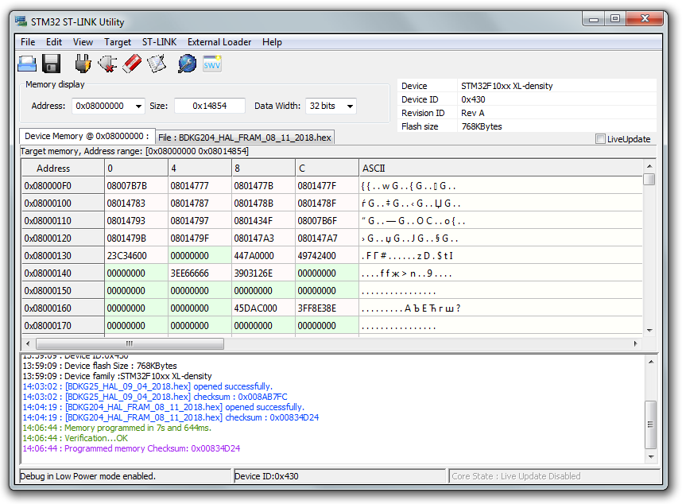

Прошивка БДКГ-204
- Подключить питание
- Подключть программатор

- Запустить STM32-LINK 
- Target ⇒ Connect
- Target ⇒ Program & Verify
- Выбрать прошивку
- Start

Если появляется такое окно с ошибкой:

Это значит, что устройство уже прошито, и прочитать или перезаписать прошивку нельзя. Чтобы убрать защиту, необходимосделать следующее (Внимание! Существующая прошивка будет стёрта!) :
- Target ⇒ Option Bytes
- Readout Protection ⇒ Disabled
- Flash Section Protection ⇒ Unselect All
- Apply
- Защита снята, прошивка стерта

Проверить корректность прошивки можно подключив устройство к SARKtech, тип устройства — БДКГ-02 (перед подключением обязательно отсоединить, подключить ODU разъёьм):